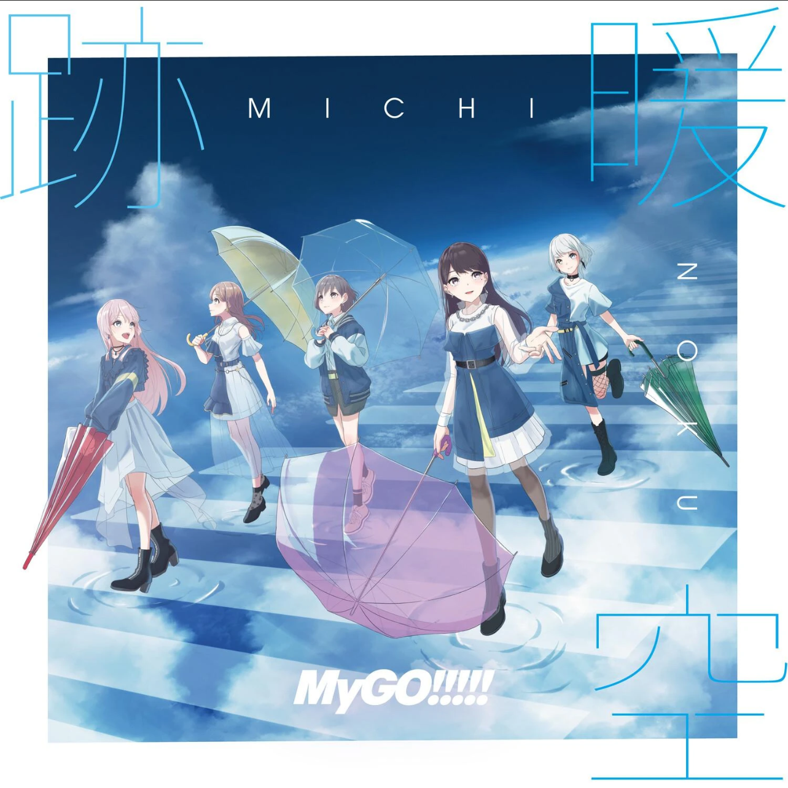
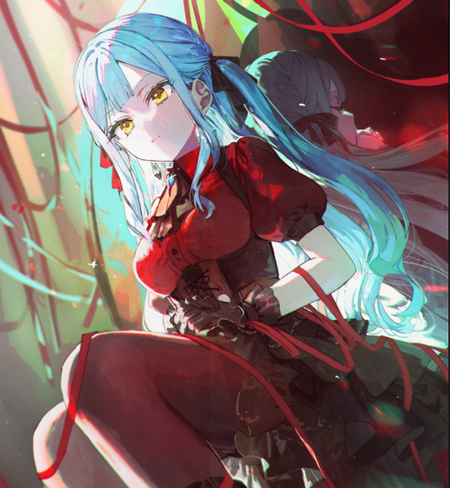
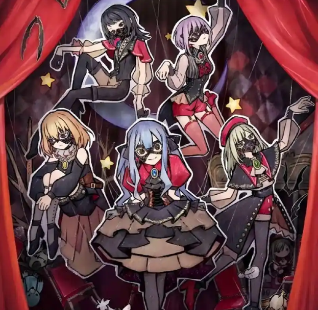
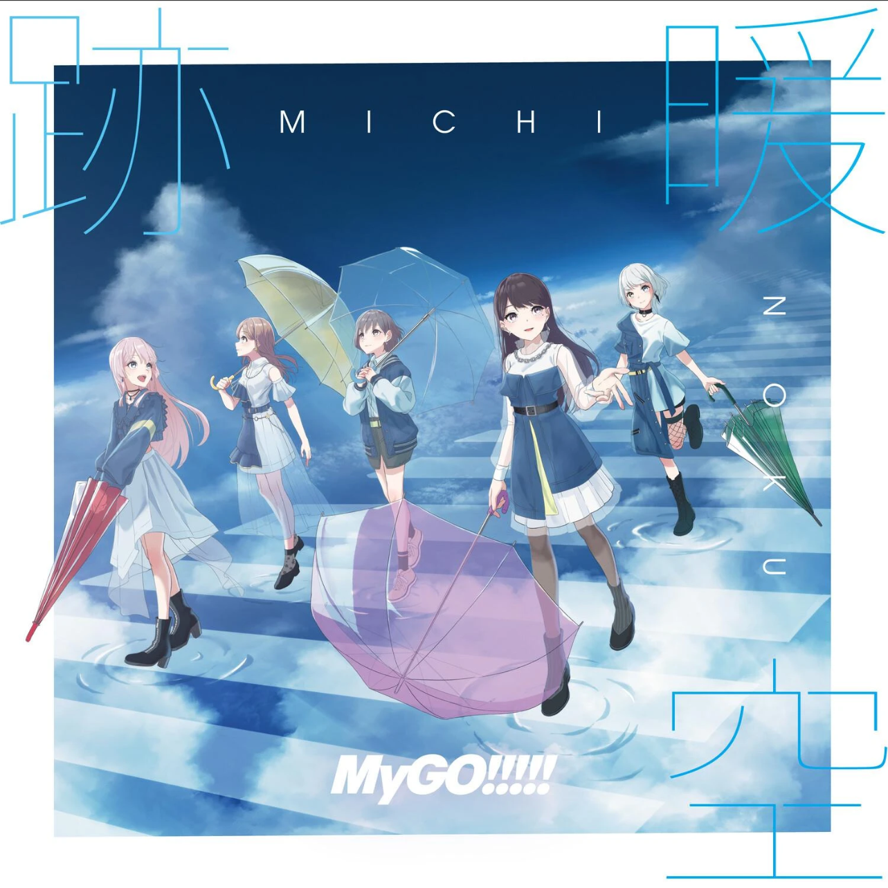
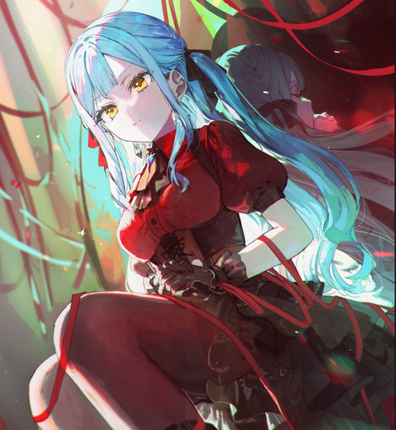
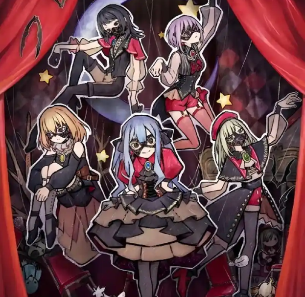

我喜欢在这些游戏中迷失自己，探索每一个角落，体验每一个故事。每个选择都可能影响游戏世界，这种自由度让我着迷。也会去尝试高难度游戏，尽管这些游戏常常让我感到挫败，但克服难关后的成就感是无与伦比的。每一次失败都是学习的机会，每一次胜利都是对自己技能的肯定。
在忙碌和压力的生活中，动漫成为了我逃避现实、放松心情的方式。当我感到疲惫或沮丧时，观看动漫总能让我暂时忘记烦恼，找到快乐和安慰。有些动漫作品让我笑，有些让我哭，有些让我思考人生。这些情感体验让我与作品之间建立了深厚的联系。
永远不会放弃你，永远不会令你沮丧，永远不会抛弃你， 永远不会让你哭，永远不会同你道别，永远不会用谎言伤害你。

 




